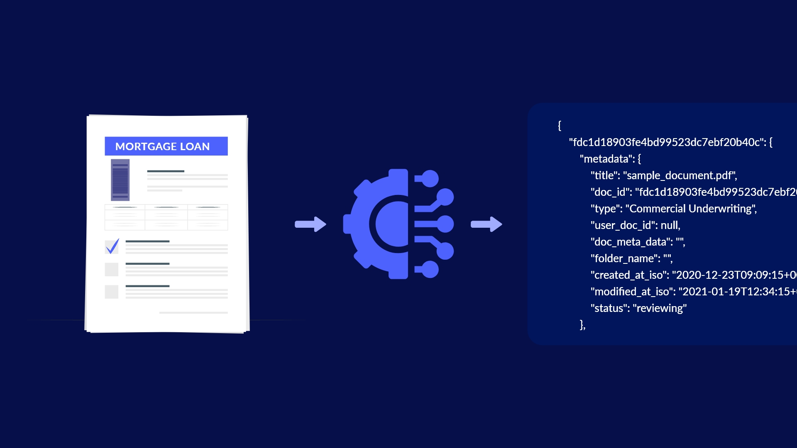

In this project I use Python to conduct Exploratory Data Analysis on over 500,000 songs gathered from Spotify. I also sprinkle in some Machine Learning models and generate insightful visualizations!
In this project I explore COVID-19 data using SQL queries and generate insights on the pandemic's impact. I also create an engaging dashboard on Tableau to present my findings!
In this project I use Microsoft SQL Server to conduct Exploratory Data Analysis and Statistical Analysis to identify patterns and trends in different types of loans. I also create a table with my findings!

In this project I use Python to conduct Exploratory Data Analysis as well as Statistical Analysis to identify patterns and trends in different types of loans. I also create some compelling visualizations!

In this project I collect raw housing data to preprocess it for data wrangling, and transform it in Microsoft SQL Server to make it more usable for data analysis.

Tableau Dashboards for all the projects I've generated reports and dashboards in order to create insightful and immersive visualizations!